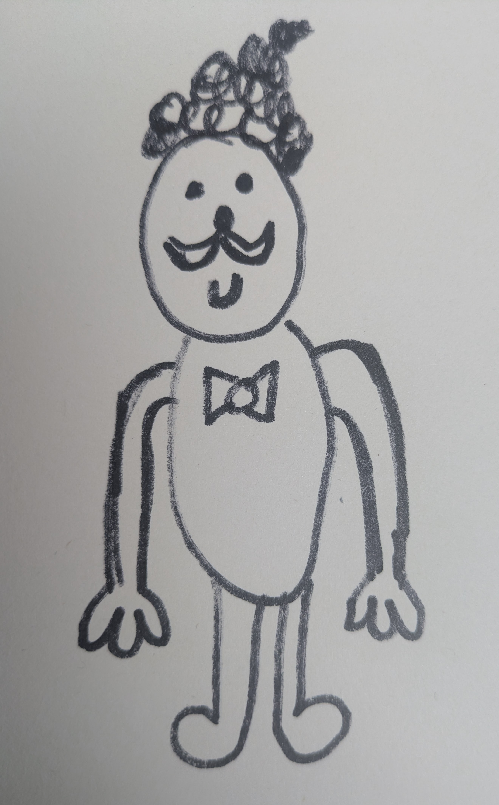
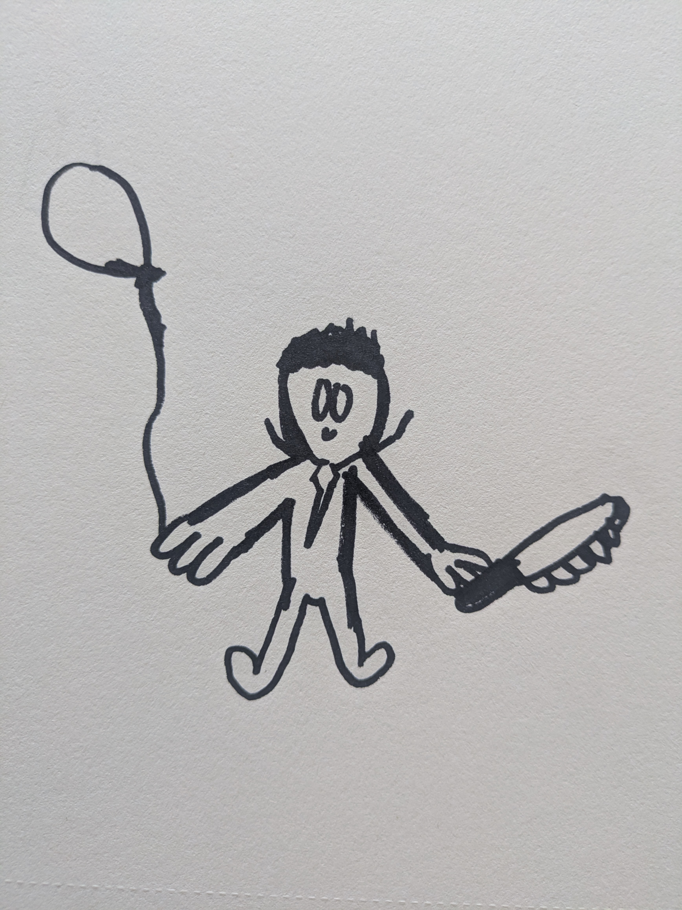
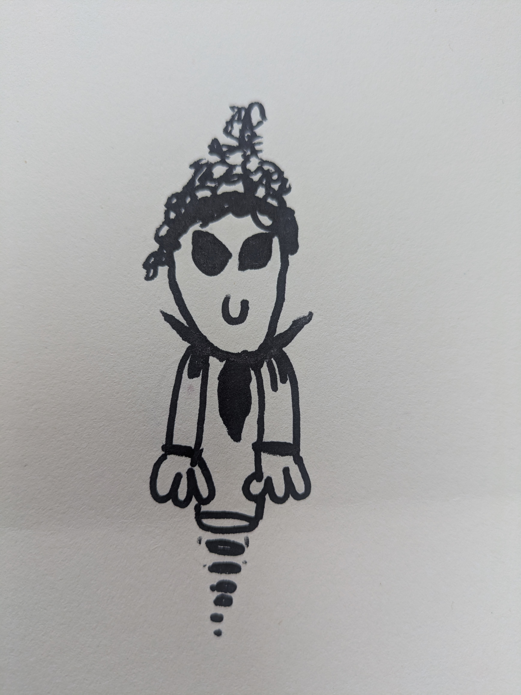
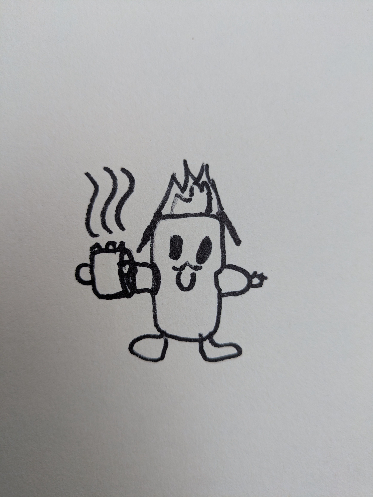
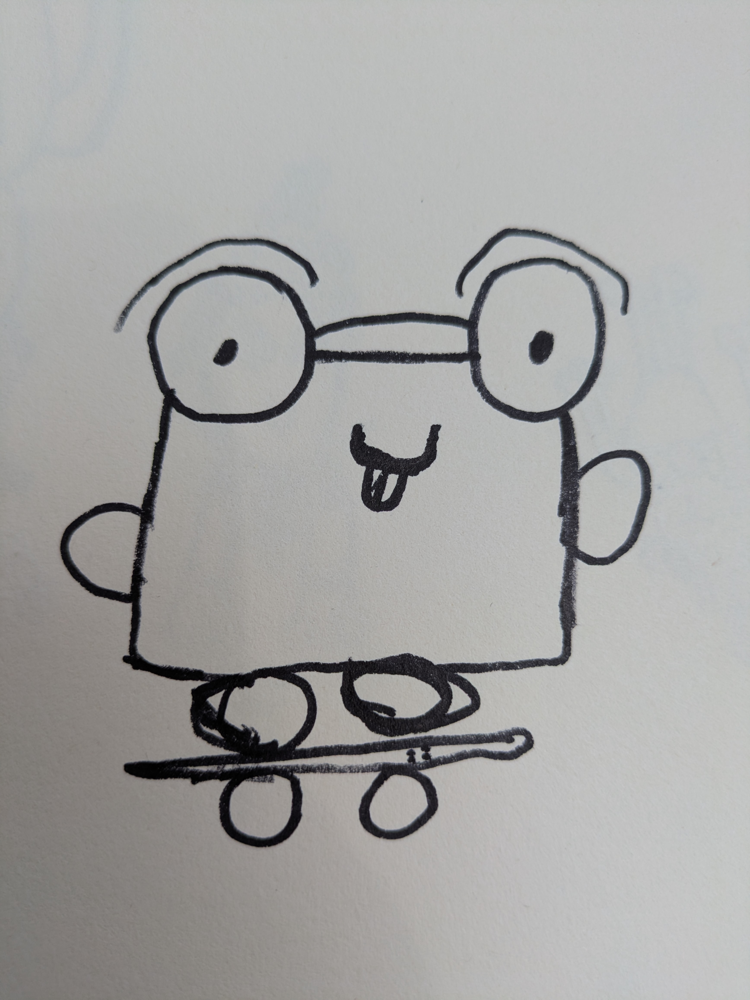
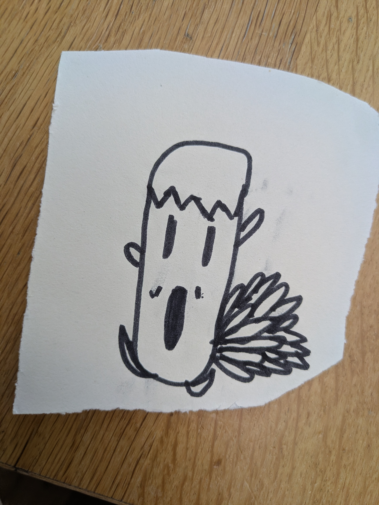

🗺️ The Ivydale Quest
⬆ ⬇ ⬅ ➡ Arrow keys (or use the buttons) to walk around
map
N
S
W
E
▲
◀
▶
▼
◤
◥
◣
◢
OK, let's go!
🎮 Play another mission!
📍
Walking around the neighbourhood…
Pick a mission
Each one sends you round Nunhead on a different adventure.
Who are you playing as?
Pick one of the gang to start the Mochi rescue.

RW

EP-Johnyhomes

GL-Boodiewoo

CGL

FS-Stevedave7777777

TM